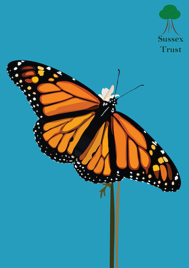
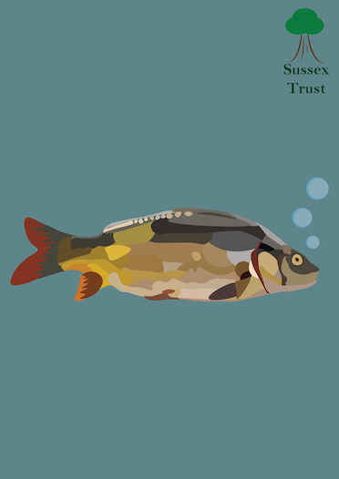
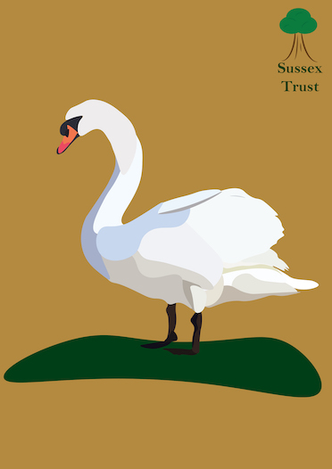
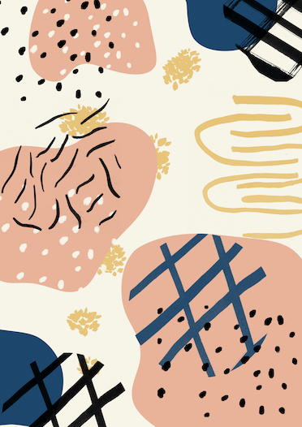
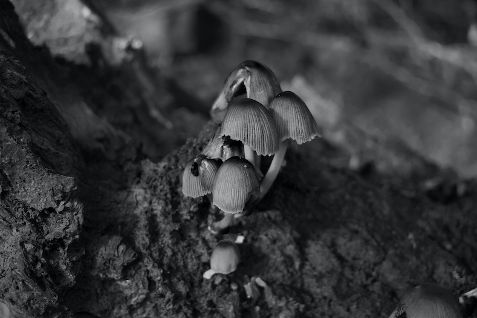
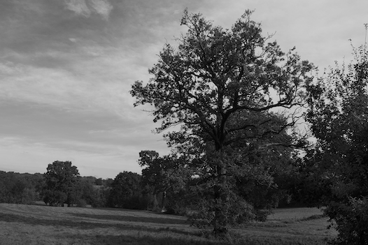
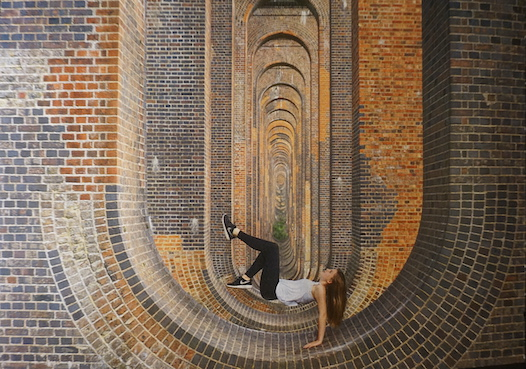
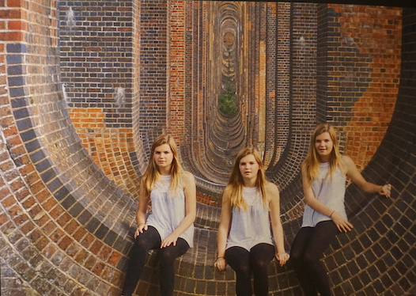

Charlotte Maslin
Hello World!
Welcome to my Digital Portfolio
My Work
Kingfisher, 2019.
For this work, I had a brief to create something for a nature trust. I chose to create a set of 4 posters for different animals found within wildlife. With the kingfisher I wanted to bring out the amazing colours that king fishers have to them.
I used Adobe Illustrator to create the kingfisher and a reference image so I could make it look as life like as possible. I used the pen tool and outlined different sections of the kingfisher and matched the colour using the eyedropper tool to get the right colour. Then I used the fill bucket tool to fill the shape I created. I then took the finished illustration and put it into Photoshop to create a background and add a small logo in the top right corner.
Butterfly, 2019.
This was another poster created for the nature trust. I chose a butterfly as i think they are beautiful insects. Although this image took a while to make, i think the outcome of it is really nice.
Just like the kingfisher. I started off in Illustrator creating the butterfly using the pen tool then I moved it into Photoshop to add the logo and background
Fish, 2019.
This was also part of the same brief as the other posters. I chose a fish as I thought it would be a good animal to illustrate for my project.
This was created in Illustrator too and used the pen tool to outline the different colours of the fish then used the fill bucket tool to created the different shapes of colour.
Swan, 2019.
For the swan I also used the same techniques as the other three posters. I wanted to mke it look like the posters all came from a set and had the same techniques used.
I used Adobe Illustrator and Photoshop to create the swan just like the other three posters
Animal layers, 2019.
In this artwork, I wanted to experiment with outlines and layers. I also wanted to experiment with colours and patterns. There was no real brief as it was just experimenting.
Using Photoshop, I used the pen tool to outline different images of animals then I filled them in with a new colour as well as chaning the opacity of different animals so you could see them when they were layered ontop of eachother

Leaves, 2018.
For this, I drew outlines of the different leaves and the cocoa bean on paper, then scanned them into the computer so I could digitally edit them.
I then opened them in Photoshop and selected and changed the colours of the different sections as well as copying and pasting to create a pattern.

Rome, 2018.
For this project, I wanted to create artwork from photos I had taken of my own holidays. So using one of my own photos i managed to create something else.
For this image as well as the Venice image below, I started off drawing an image of Rome using a balc pen and paper so there were thick lines around the image. I then scanned the image into the computer and opened it in photoshop so i could edit it. I selected each shape and filled it in using the bucket tool. It was very time consuming but I think the end product is worth it.

Venice, 2018.
This was another image I created alongside the Rome image. I used a photo I took in Venice and used photoshop to make it drawn
I also used photoshop to create this with the same technique of drawing the image on paper first then scanning it in and selecting each section to colour in using the eyedropper tool
Texture, 2018.
This art was also more of an experiment that I wanted to test as packaging for a choclate bar. I really enjoy the use of textures in art so wanted to try it out myself.
I first used ink to draw different textures on paper thwen scanned them in and changed the colours of them in Photoshop.I also created digital blobs of colour to contrast with the textures.
Bridge, 2020.
This is some of my photography that I have done. I took this image of a viaduct that is close to my house. I liked how it was the main thing in the image and such an interesting piece of artitecture
Mushrooms, 2020.
Tree, 2020.
Levatating, 20116.
Friends, 2016.

Banana, 2016.
This banana was created as a project for a fianl piece of my school work and my first real introduction to photoshop. I edited out the stick that was holding the banana pieces up but they still look like they are floating.

Tomato, 2016.
In this I took a photo of a tomato under water to create the bubble effects. I then uploaded it into photshop and edited it so it looked more colourful. Then I printed it out and sew onto it which is the lines on it. I like experiementing with textres and things you can touch on an image.
Charlotte Maslin
Originally from Brighton, I currently attend the University of Kent and I am in year two of studying Multimedia Technology and Design.
Charlotte Maslin
My email is cem43@kent.ac.uk and number is 07553660088
Instagram: charlottemaslinn
Twitter: red_robin11